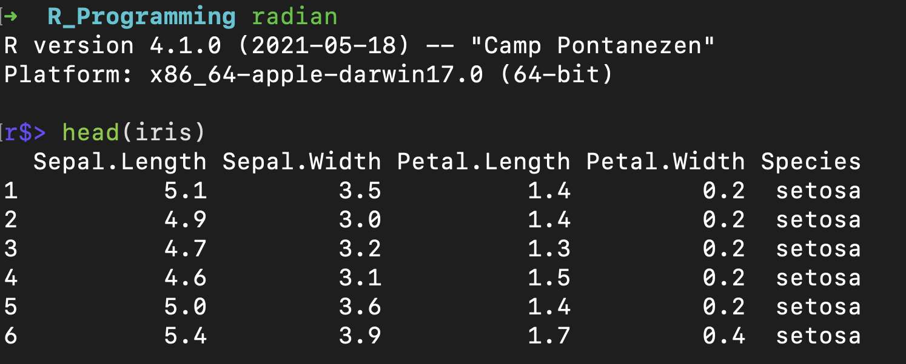
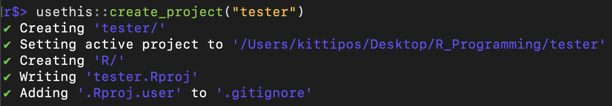
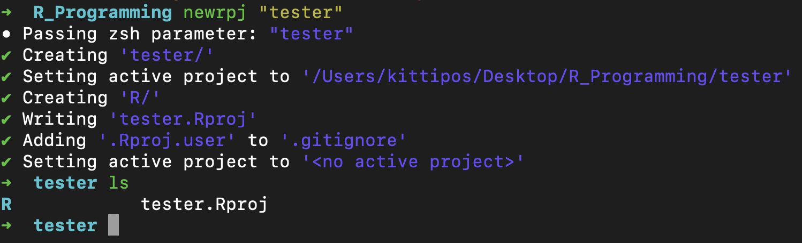
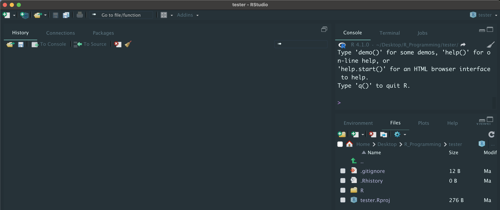

Code
$SHELL --versionzsh 5.8 (x86_64-apple-darwin21.0)A fun tutorial involving zsh & R code
Kittipos Sirivongrungson
March 17, 2022
I am an R user who know a little bit of linux shell, one day I wonder…
How do I navigate and open R project from the shell, and
How do I create R project from the shell
This blog post will show you how to do that and hopefully you’ll learn something new and enjoy using it!
What you’ll need
In the next demonstraction, I’ll walk you through by creating a shell function which you have to store it in ~/.bashrc or ~/.zshrc (or other locations that can be sourced) by yourself.
Before I started, I using macOs, and my shell is zsh running in a Terminal app. If you are using different shell, modify the code correspondingly.
How to navigate to an R project quickly ? Lots of options can do it without using a mouse, e.g. using Spotlight Search in mac, but to day I’ll use command line.
I like to group most of my R projects in a single directory (i.e. R_programming) so that I can navigate easily even with GUI. That will helpful when using CLI too.
You might already know cd command which change directory of a terminal, but typing cd multiple times can be time consuming.
A simple solution is to creating a shell function to change directory to a parent folder which contains R projects.
/Users/kittipos/Desktop/R_ProgrammingIn the code above.1
I define a shell function cdrpg() that change directory to my R_programming folder
I execute cdrpg, and the directory is then changed (to call function in shell, you don’t use parenthesis).
Call pwd to confirm the location at R_Programming directory
For me, I store this function in a .zsh file that can be sourced by ~/.zshrc
cd-to.zsh
And, make it executable by:
So that every time I open shell, I could call cdrpg, and I would arriving at R_Programming directory.
And I also define similar functions to cd to other frequently-visited locations in this cd-to.zsh script as well.
After I’ve arrived at R_Programming/ and cd to the sub-directory I wanted, I can open R project from shell with the following command
The result is similar to clicking .Rproj icon to open an RStudio project.
To save typing, I wrap this into openrpg() function and store it in a shell script which can be sourced by ~/.zshrc
r-proj.zsh
And, make it executable by:
Now, the last part is a little bit tricky!
First, let’s me show the easy way to do in shell by executing R code directly.
The radian is a modern R console in the shell. First, enter R by running radian, then type any R code. The result looks pretty.

To create a new project, you can use usethis::create_project("path-to-project")

It’s done!, however, there is quite a bit of typing.
Next, I’ll show you to all of this plus open an R project being created all in one line of code with fewer characters.
What I want to achieve is this…
If I run this command in shell,
the R project “foo” should be created, then in my terminal it should cd to foo/ directory, and open foo.Rproj file in RStudio.
We’ll need to do a couple of things:
new-rpj.RCommand Line Basics for R Users show that Rscript command is the way to execute R script from shell.
The basic usage is quite simple.
This will execute new-rpj.R, and “foo” is a shell argument to be passed to the script.
Now, let’s edit new-rpj.R
new-rpj.R
# Retrieve Shell arguments
arg <- commandArgs(trailingOnly = TRUE)[1]
# Show what parameter is being recieved
cat("- Passing zsh parameter:", arg)
# Create R Project using name we've supply
usethis::create_project(arg, rstudio = TRUE)commandArgs() is a function to retrieve shell arguments, trailingOnly = TRUE will only get the one that we’ve supply, for more example see r-bloggers post.
Assign the first shell argument to arg
cat() to confirm the passing parameter.
Lastly, usethis::create_project() to create an R project with name from arg. Use rstudio = TRUE to also create .Rproj file.
After saving this script new-rpg.R, try running this in the shell:
It should create R project “foo” as a sub-directory of your current working directory.
Finally, let’s wrap-up everything by building newrpj function to create R project, change directory to the project folder, and open the project in RStudio.
I store this function in r-proj.zsh which can be sourced by ~/.zshrc.
r-proj.zsh
#!/bin/zsh
## Function to create new R Project, `cd` to the project, and open in RStudio
newrpj(){
# Create R project in a sub-directory with names from shell 1st argument
Rscript "/Users/kittipos/bin-ks/helper/R/new-rpj.R" "$1"
# Go into that sub-directory & Open R project in RStudio
cd "$1"
open *.Rproj
}$1 which is a shell variable that represents the first argument supplies to the newrpj() function, which, in this case, is an R project name.Here is the result of calling newrpj with argument “tester”
Created RStudio project named “tester”
Change working directory to tester, and
Open RStudio


You can also define an alias instead of function, but I like to use function because It can handle larger code better. Also, another way is to assign path to a $VARIABLE and cd $VARIABLE, but you might have to type more characters.↩︎